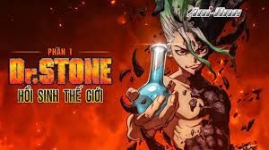

Dr. Stone cuenta la historia de dos adolescentes, Senku y Taiju; Senku se caracteriza por ser sumamente inteligente además de pertenecer al club de química de su escuela mientras que Taiju, no es demasiado inteligente como él, pero lo compensa con su gran fuerza física y que está enamorado de una linda estudiante de nombre Yuzuriha, de la que pretende confesarse. Cuando está por declarar su amor a su compañera de clases, una luz cegadora de origen desconocido provoca que los seres humanos sin excepciones y las golondrinas se conviertan en piedra. Como consecuencia, la sociedad tal como la conocemos y la civilización se desmorona. Pasan miles de años y Taiju finalmente logra liberarse de la petrificación gracias a su amigo Senku el cual pudo liberarse medio año antes y gracias a eso, ahora sabe que están en el 5 de octubre del año 5738, 3700 años después de la petrificación de la raza humana. Ahora al tanto de lo que sucedió, Senku le revela a Taiju que ha estado trabajando en un disolvente químico con el cual busca liberar a los seres humanos que no hayan sido destruidos (si una estatua humana se destruye, la persona que estuviera petrificada morirá en el acto) de sus prisiones de Piedra. Tras numerosos estudios e intentos fallidos finalmente Senku logra desarrollar la fórmula necesaria para liberar a la raza humana de este estado, usando la fórmula con su amiga Yuzuriha la cual pudo salvarse. Sin embargo, cuando iban a liberar a Yuzuriha, un incidente con un león causó que tuvieran que utilizar la fórmula en otro adolescente llamado Tsukasa el cual es sumamente fuerte como inteligente y logra ayudarlos temporalmente, hasta que descubren que Tsukasa quiere usar la fórmula de Senku para liberar solamente a los humanos más jóvenes y eliminar a los adultos mayores para crear una utopía basada en su ideología del más fuerte y sin utilizar la ciencia. De este modo la historia se divide en dos bandos: Senku busca usar la fórmula para restaurar a la humanidad mientras que Tsukasa quiere crear una civilización desde cero con él como el rey supremo.
|  |